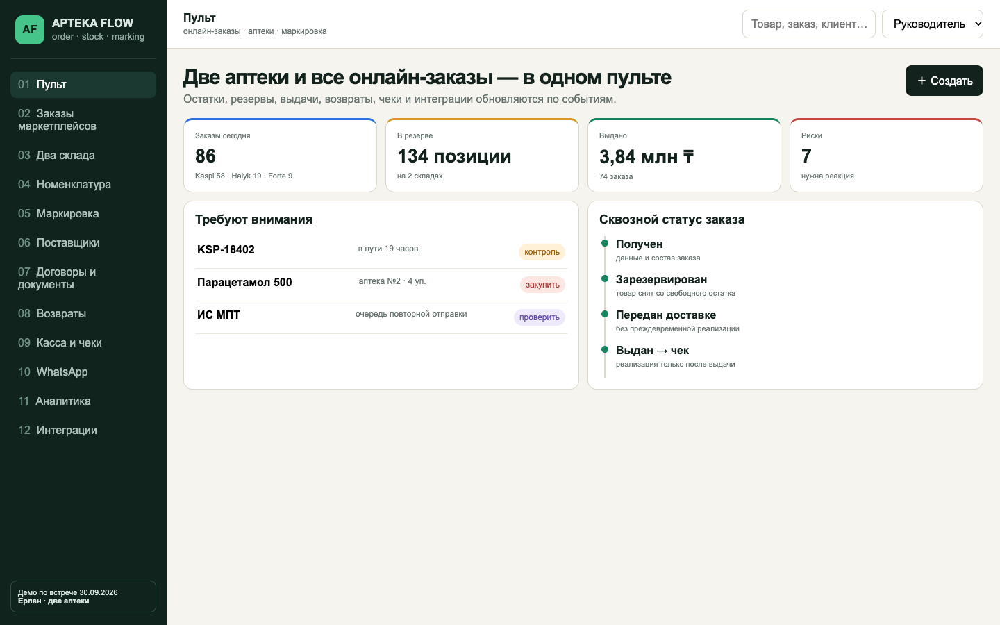
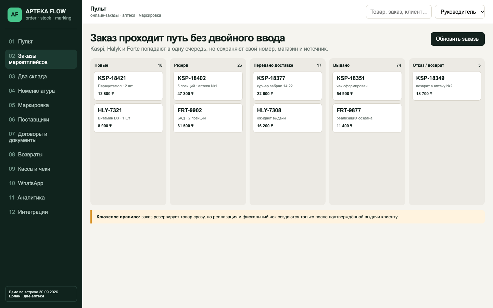
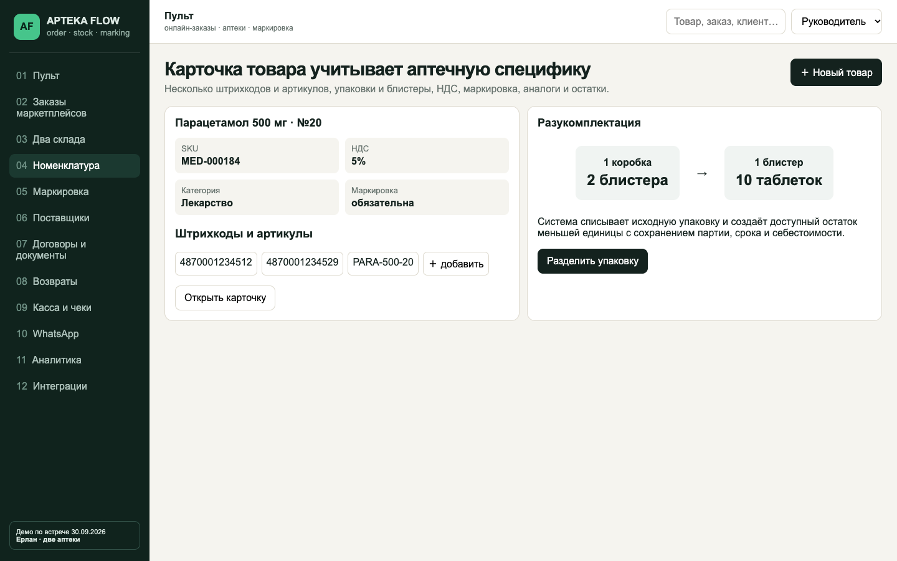

Персональная система Ерлана для автоматизации заказов Kaspi, Halyk и Forte, резервирования товара, выдачи и возвратов, складов, номенклатуры, поставщиков, документов, фискализации, НКТ и маркировки лекарств.
01Kaspi, Halyk и Forte: заказы, цены, остатки и статусы после подтверждения API.
02Получен → резерв → сборка → доставка → выдача → реализация/чек.
03Свободно, резерв, в пути, партии, сроки, перемещения и инвентаризация.
04SKU, несколько штрихкодов/артикулов, упаковки, аналоги и разные ставки НДС.
05Коробка → блистер → единица с сохранением партии, срока и себестоимости.
06Сопоставление карточек и события ИС МПТ для лекарств и БАДов.
07Предоплата, постоплата и консигнация; поставки, партии и расчёты.
08Договоры, сроки, PDF, допсоглашения, накладные, ЭСФ и акты сверки.
09Подтверждение возврата от доставки, снятие резерва и возврат на нужный склад.
10Реализация и фискальный чек только после фактической выдачи.
11Переписка с клиентом или поставщиком внутри карточки.
12Продажи, отмены, выдача, маржа, дефицит и оборачиваемость по каналам и аптекам.
Руководитель видит заказы, резервы, выдачи, выручку и проблемы интеграций; сотрудник — очередь действий по своей аптеке.


Единая очередь Kaspi, Halyk и Forte: новый заказ, резерв, доставка, выдача, чек или возврат.

Несколько штрихкодов и артикулов, ставки НДС, разукомплектация, партии и маркировка.
Заказ приходит с номером, магазином, клиентом, телефоном, составом и суммой.
Позиции снимаются со свободного остатка выбранной аптеки.
После подтверждения создаются реализация, чек и статус маркетплейса.
Отказ принимается от доставки; товар возвращается на склад и в оборот.
| Роль | Рабочий экран | Контроль |
|---|---|---|
| Фармацевт | заказы, сборка, выдача, возврат | следующий шаг и отсутствие ошибок |
| Кладовщик | приёмка, партии, маркировка, инвентаризация | остаток, сроки, расхождения |
| Закупщик | поставщики, договоры, поставки и оплаты | дефицит, условия, документы |
| Руководитель | общий пульт двух аптек | продажи, маржа, отмены и интеграции |
Аудит текущей программы, кассы, кабинетов, API, НКТ/ИС МПТ и справочников.
Ядро: номенклатура, два склада, резерв, маршрут заказа и роли.
Поставщики, документы, возвраты, разукомплектация и аналитика.
Подключение подтверждённых интеграций, перенос, обучение и запуск.
| Разработка | Исходный код и бессрочное право использования без оплаты за сотрудников. |
| Перенос | Номенклатура, остатки, поставщики и действующие договоры из согласованных выгрузок. |
| Развёртывание | Облачный или согласованный сервер, резервное копирование и защищённый доступ. |
| Обучение | Сессии для руководителя, сотрудников аптек и ответственного за склад. |
| Гарантия | 6 месяцев на реализованный функционал. |
После договора: обследование и запуск разработки.
После демонстрации рабочего ядра и согласования маршрута.
После подключения согласованных контуров, обучения и приёмки.
| Пользователи | без оплаты за каждого сотрудника |
| Право использования | бессрочно |
| Дальнейшие доработки | по запросу и отдельной оценке |
| Сторонние сервисы | оплачиваются напрямую их провайдерам |